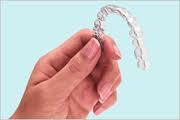

Snap on and your teeth will no longer be the same old yellow-coloured, calcium structures. Thanks to the discovery of Snap-On Smile, the technique is a blessing in disguise for those with one dental problem or the other. As the name suggests, Snap-On Smile technique solves a large number of short or long- term dental problems. It is a 20-minute approach sans prepping, injection, or adhesives and can be used for restorative or cosmetic functions. This revolutionary technique is easily available with dental Surgeons, clinics and hospitals across India.
The Snap-On Smile involves establishing vertical dimension before full-mouth reconstruction, use as a diagnostic tool for implant restorations, cosmetic enhancement for whiter smile, removable partial dentures for any edentulous area, use as a precursor to porcelain veneers, use with fixed bridges/porcelain crowns, overcoming medically compromised oral health, to provide the appearance of a closed diastema (gap between two teeth), overcoming dental phobia, covering existing compromised dental work, lifting sagging or wrinkled facial skin.
On your second visit nearly 3 weeks later, the dentist will fit your Snap-On Smile and make minor adjustments if needed. When inserting the appliance, establish the correct path of insertion. Always use both hands starting at the posteriors, applying pressure until seated completely. After few minutes of the appliance, adjustment may be necessary. You can eat with it, drink with it, and wear it all day long, just remove it when you go to sleep.